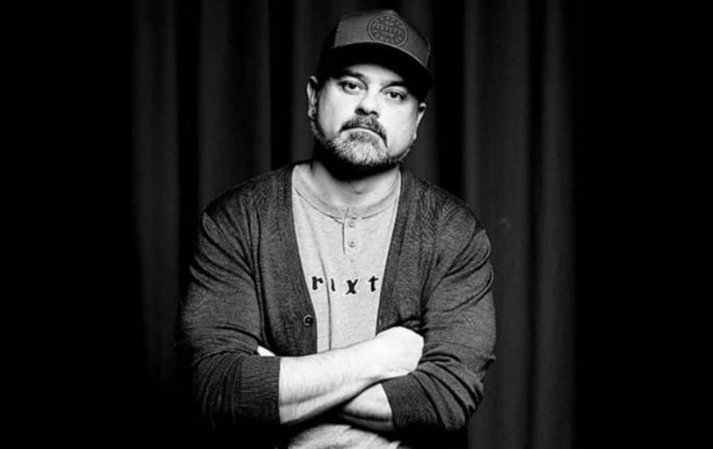
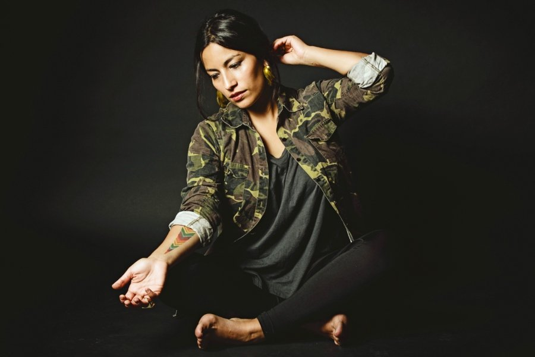
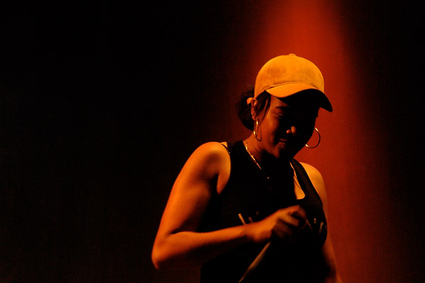
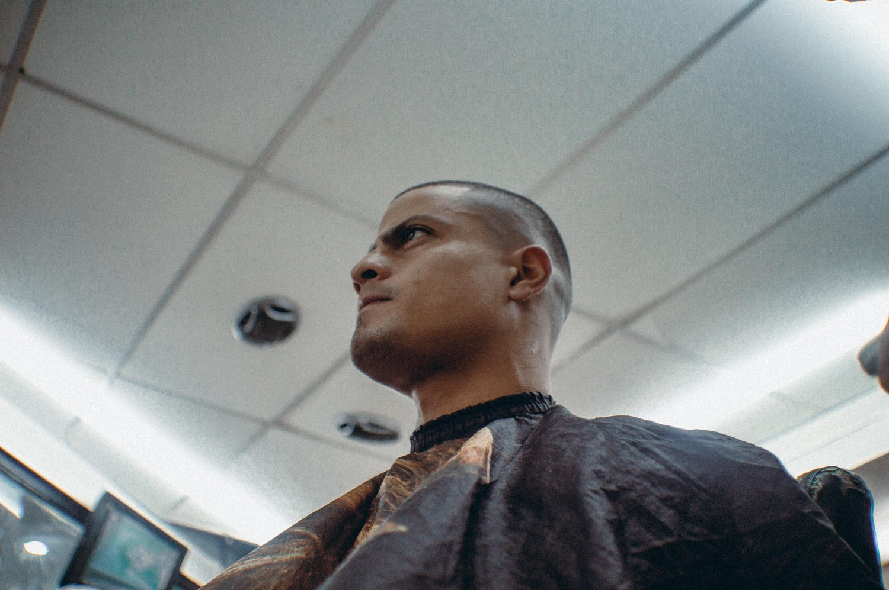
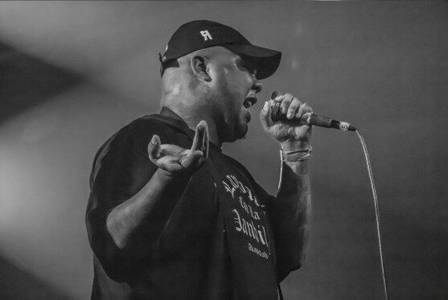
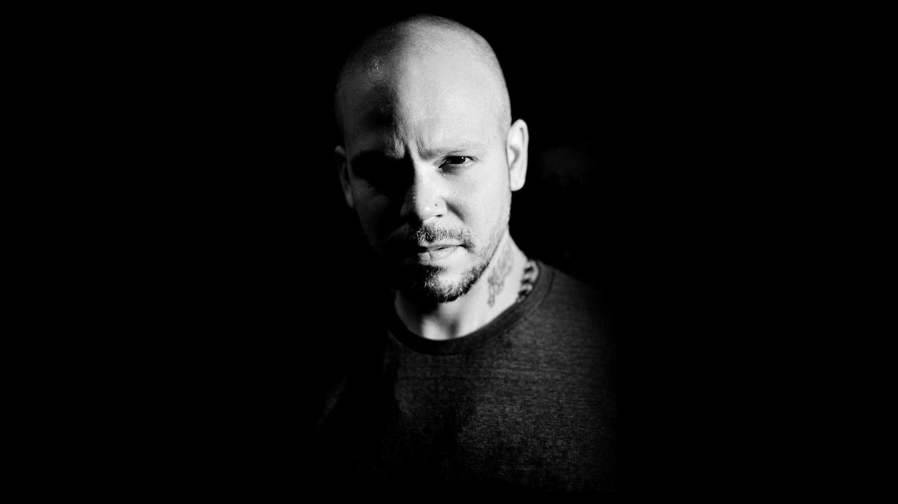

Cortesía: Rapsusklei
MEJORES RAPEROS DE HABLA HISPANA
Ahora, con este top de los mejores raperos de habla hispana, nos enfocamos a lo nacional y porque hace falta enaltecer el idioma español. Principalmente, las que consideramos más influyentes, enfocándonos a carreras en solitario.
Hace un tiempo hicimos un conteo de las mejores canciones del rap y algunas propuestas nuevas. Sin embargo, por el origen del género, nos habíamos mantenido al margen del idioma inglés. Así que ahora es el turno de hablar de los mejores raperos de habla hispana…
Vico C
Para muchos nacidos en los noventa, su adolescencia quedó marcada por algunos temas del nacido en Brooklyn de ascendencia puertorriqueña. Y esto debido a que su popularidad masiva llegó a mediados de los dosmil con el reggaetón y su auge.

Cortesía: Vico C
Sin embargo, todo esto tiene una historia que a muchos puede no gustarle, pero así es la vida. Vico C inició todo un movimiento que tal vez no tenía pensado: el rap en español, principalmente en América Latina. A finales de los ochenta en Puerto Rico se realizó un concurso con DJ Negro para que los chicos cantaran en inglés.
Todos estaban influenciados, principalmente, por lo que en ese entonces se conocía del género. Sin embargo Vico C salió a hacerlo en español y cual película de Eminem, esto le trajo muchas cosas buenas.
Canserbero
Entrando en el mismo terreno, latino, pero yendo a Venezuela, se encuentra uno de las lamentables pérdidas prematuras. Sin embargo, influyente a más no poder del género por parte de su país y en América Latina.
La música de Canserbero traspasó barreras junto a otros de sus contemporáneos, pero él encontró una fórmula infalible en las batallas y las letras muy personales.
Cortesía: Canserbero
Su música llegó a tener un título de filosofía, justo por las temáticas positivas que trataba. Su estilo de voz grave y un poco rasposa es inconfundible y se convirtió, entre los más jóvenes, una gran influencia, catapultando al rap de su país como uno de aquellos que daba un mensaje positivo.
Kase-O
Decidiendo meter referentes españoles que hayan impactado mucho en el rap hispanoparlante, se encuentra Kase-O. Y sí Sho Hai también es un nombre importante si hablamos de algo de Violadores del Verso. Sin embargo su carrera en solitario no ha tenido el mismo impacto mundial como el de Kase-O.
Cortesía: Kase-O
Una vista más activista, filosófica y centrada en el género para enviar un mensaje positivo. Algo que impacte a generaciones sin olvidar lo divertido que es el rap. Su carrera como grupo se viene cultivando desde mediados de los noventa, pero esta última década, en solitario la sigue rompiendo.
Principalmente con ese sonido estético del rap con DJ donde se ve inspirado a instrumentarlo como con jazz, rock o algo orgánico.
Nach
Al igual que Doble VV y Kase-O, la carrera de Nach lleva desde los noventa agarrando camino. Aunque no fue hasta los años dosmil cuando comenzó a sonar de forma abrupta.

Cortesía: Nach
Especialmente por sus temáticas que se veían enfocados a la preocupación social. Tal y como lo pueden ser el medio ambiente y algún tema que nos incumbe a todos como planeta y no como seres individuales. Convirtió todo esto en un tema que llegó a ser representativo, justo por dar un giro al rap convencional. Así que la cuestión sobre la vida, lo social y lo político junto a lo cultural no se encontraban ajenos.
Uno de los trucos bien usados por el rapero fueron las colaboraciones con varios artistas de habla hispana. A veces su mensaje se veía implícito en cada colaboración y así logró mayor audiencia hasta llegar a lo que es hoy.
Mujeres talentosas en nuestra selección de los mejores raperos de habla hispana
La Mala Rodríguez
Sí, las mujeres también tienen una importancia grande para el rap en español y nos hemos encontrado con tres ponencias. De primera instancia es imposible hablar de rap y mujeres si no se menciona a La Mala Rodriguez.
Cortesía: Mala Rodriguez
Quien en sus inicios logró permear en letras parte de lo que vivía y veía entre La Macarena y Madrid. Su lado musical se ve creado gracias al sello Zona Bruta.
Probablemente para muchos hasta ahora se siga permeando que el éxito se debe, básicamente, a su figura femenina. Sin embargo, marcó un antes y un después en el género, sobre todo porque varios proyectos femeninos ya formados vieron la luz gracias a su impulso o inspiración. Creemos que el rap femenino, sea la temática que sea, en la parte española, se ve bien definida por la Mala Rodríguez.
Ana Tijoux y Arianna Puello
Arianna Puello y Ana Tijoux es un combo que decidimos juntar por el nacimiento de su carrera musical que se se ve desarrollada a finales de los años ochenta. Aunque, en caminos diferentes, ambas han crecido hasta el día de hoy a la par.

Cortesía: Ana Tijoux
Puello y Tijoux se convirtieron en referentes. Por ejemplo, La Mala marcando lo latino y Arianna Puello, de nacionalidad española, también. Puello, además, tiene raíces caribeñas, ya que tiene ascendencia de República Dominicana. Cabe mencionar que ésto está totalmente presente en su música y en la temática que aborda en sus rimas.

Cortesía: Arianna Puello
Ambas cantantes dan con rudeza mensajes que buscan la igualdad a la sociedad. Y sí, enfocados hacia un lado, la izquierda es su principal ideología.
Educación, igualdad, economía y sí, a veces un poco de crítica social directa son parte de su lírica. Cada una por su parte ha creado una escuela para cada uno de sus países de origen: Ana Tijoux para Chile y Arianna Puello para los dominicanos.
Lil Supa
Su nombre real es Marlon Morales y desde inicios de los 2000 ha incursionado en la cultura del hip-hop. Desde el movimiento del break dance y el graffiti hasta consolidarse como rapero con un paso con otros artistas.
Él es de origen venezolano y canta sobre las realidades que vive en la calle y con los amigos, con lo que mantiene la filosofía del hip-hop muy en alto desde donde se encuentre.

Cortesía: Lil Supa
Su evolución instrumental es notoria y siempre se acompaña de samples muy suaves, combinando beats retro y modernos que combinan el lo-fi de forma sutil.
Akapellah
Akapellah es uno de los raperos más activos de Venezuela en la actualidad, su nombre real es Pedro Elias Aquino. Él muestra la cruda realidad del barrio en sus letras, así como sus éxitos en alto.

Cortesía: Akapellah
Su música es incomparable ya que cuenta con una voz gruesa y la viene puliendo desde los 13 años, principalmente en concursos de freestyle y posteriormente ya con producciones y maquetas originales. Él se ha convertido en un referente moderno si se habla de rap hispano hablante, sobre todo latinoamericano.
Residente
René Pérez Joglar, conocido como Residente, es un rapero, cantante, compositor y productor de música urbana puertorriqueño. Fue miembro fundador y vocalista de Calle 13,banda que integró con su media hermana Ileana Mercedes Cabra Joglar y su hermanastro Eduardo Cabra Martínez.

Cortesía: Residente
En enero de 2015 René comienza a trabajar en su nuevo proyecto en solitario, al mismo tiempo continúa la gira con la agrupación.
A principios del mes de junio, antes de comenzar la gira europea, Residente anuncia que está trabajando en un proyecto nuevo. Luego de una exitosa gira por Europa, René viaja a Rusia, Siberia, China, para trabajar en su nuevo álbum. En 2017 Residente lanza su primer álbum como solista basado en su ADN, llamado "Residente", su primer sencillo se fue dirigido por él mismo y lanzado el viernes, 13 de enero de 2017.
En el 2018 continúo con el lanzamiento de los sencillos "Rap bruto" y "Sexo", que consiguieron una amplia repercusión en la escena. Al año siguiente lanzó los temas "Bellacoso" y "Pecador", los cuales consiguieron rápidamente cientos de reproducciones en YouTube.
En el 2020 Residente siguió con el lanzamiento de los temas "René" y "Antes que el mundo se acabe", los cuales fueron un éxito en distintas plataformas digitales, respectivamente.